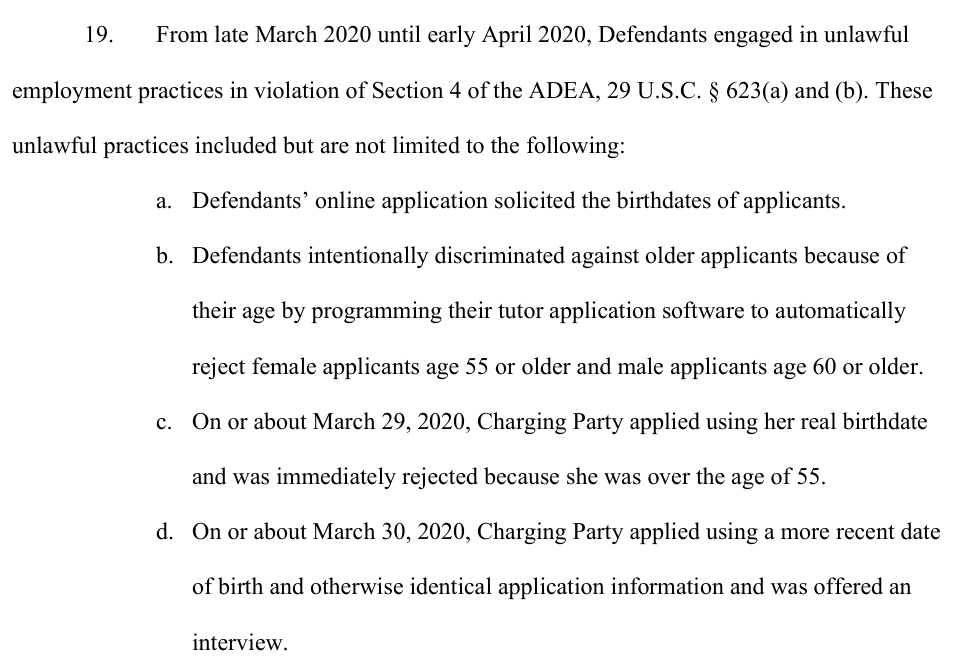

iTutorGroup's hiring software rejected women 55 or older and men 60 or older
Rejected with her real birth date and offered an interview a day later with a younger one, Wendy Pincus exposed a hiring rule that had turned away more than 200 older applicants and cost iTutorGroup $365,000.
Why this matters
Automated hiring tools now stand between most job applications and the person who might read them. When one of them discriminates, the coverage tends to call it "AI bias" and stop there. This lesson takes one case where the record is unusually complete: iTutorGroup's software that rejected women 55 or older and men 60 or older. It uses that case to pull apart two things the phrase hides, a discriminatory rule a person wrote and a discriminatory pattern a model learned on its own. By the end you will know why the first kind is simple to prove and rare to catch, why the second is the harder problem, and how to tell which one you are looking at.
- 01
- Amazon's resume screener taught itself to penalize the word 'women's': the sibling case, where a model learned the bias instead of a person writing the rule.
- 02
- Employers decide whether New York City's hiring-bias audit applies to them: the law that now makes employers audit the automated tools they use to screen candidates.
Two applications, one day apart
On March 29, 2020, Wendy Pincus applied to tutor English for iTutorGroup, entered her real date of birth, and was rejected the same day. The next morning she applied again with the same name, the same background, and the same answers, changing one thing: a more recent birth date. This time the company offered her an interview.1
iTutorGroup is a group of companies that sell English lessons to students in China and hire tutors from the United States to teach them from home. The only thing an applicant needed to be hired was a bachelor's degree.1 Its application form asked every applicant for a birth date, and the software behind it had been programmed to automatically reject female applicants 55 or older and male applicants 60 or older.1 Pincus was past 55, so her first application was turned away before a person read it. Her second, carrying a younger birth date, went through.
She was not the only one. Between late March and early April 2020, the software rejected more than 200 other qualified applicants, all age 55 and over and all holding at least a bachelor's degree, because of their age.1 The Equal Employment Opportunity Commission, the federal agency that enforces the country's workplace anti-discrimination laws, sued iTutorGroup over the rule, and in 2023 the company settled for $365,000.2
Illegal on its face
The law iTutorGroup ran into is the Age Discrimination in Employment Act, a 1967 federal statute usually shortened to the ADEA, which makes it unlawful for an employer to refuse to hire someone because of their age.3 Its protection has a floor: it covers workers who are at least 40 years old.3 Everyone the software rejected was well past that floor.
Most discrimination cases are hard because the reason is hidden. An employer rarely writes down why it passed over a candidate, so the worker has to infer a forbidden motive from the pattern of who got hired. iTutorGroup's rule removed that difficulty. The software rejected people for being 55 or 60 and older, and age was the only thing it weighed.1 When a rule sorts applicants by a protected trait and rejects them on it, that is discrimination on its face: the forbidden reason is stated in the rule itself, not inferred from a pattern. The EEOC pleaded the conduct as intentional and willful, and Pincus's two applications, identical but for the birth date, were the proof.1
The settlement that admitted nothing
The EEOC filed suit in the U.S. District Court for the Eastern District of New York on May 5, 2022.4 The case never reached trial. On September 8, 2023, Judge Pamela K. Chen signed a consent decree, a court-approved settlement that ends a case on agreed terms.2 iTutorGroup agreed to pay a gross sum of $365,000 into a fund for the applicants its software had rejected in March and April 2020, distributed at the EEOC's discretion.25 It also accepted injunctions against the conduct: it may not reject tutor applicants who are 40 or over because of age, screen applicants by age, or ask for a date of birth before making a job offer.2
The decree is narrower than it looks. iTutorGroup admitted nothing. It denied the EEOC's allegations in full, disputed that its tutors were even employees rather than independent contractors, and the decree states plainly that it is not an admission that any defendant broke any law.2 By the time it signed, the company had also stopped hiring tutors in the United States and told the court it had no plans to resume. Most of the decree's forward-looking obligations, such as the anti-discrimination training and the policy rewrites, take effect only if it starts up again.2 What the $365,000 settled was the past.
The record never calls the software AI
Coverage of the case treated it as a milestone in artificial intelligence. Law firms wrote that the EEOC had secured its first workplace AI settlement.6 Read the actual record, though, and something stands out: the EEOC never calls iTutorGroup's software artificial intelligence or machine learning. The only place those words appear anywhere in the complaint, the consent decree, or either of the agency's press releases is the 2022 suit announcement. There the EEOC invokes its own Artificial Intelligence and Algorithmic Fairness Initiative, naming the backdrop for the case rather than describing this system.1245 The documents describe something plainer. Someone programmed the application software to check a birth date against a cutoff and reject anyone above it.

The distinction matters for how to read any story about "AI hiring bias," because two different failures get the same headline. One is a rule a person wrote and can point to, like iTutorGroup's date-of-birth cutoff. The other is a bias a model picked up on its own from historical data, without anyone stating it. That is the kind behind Amazon's scrapped recruiting tool, which trained on a decade of past résumés and taught itself to downrank women. iTutorGroup is the first kind, and that is exactly why the case was clean to win. The discriminatory reason was written into the software, so the EEOC did not have to prove a hidden motive or untangle a statistical pattern. It could point at the rule. A law firm that read the filings at the time made the same point, that the case involved deliberate programming rather than algorithmic bias.7
The filters that run before a human looks
The version of this a reader is most likely to meet is the applicant filter. Hiring platforms let employers set knockout rules that reject an application before a person sees it: a required certification, a minimum number of years of experience, a graduation date inside a certain window. A rule like that can carry an illegal criterion as directly as iTutorGroup's did, and a birth-date or graduation-year cutoff is a thin cover for age. The harder and more common problem is the other kind, the learned proxy: a model that was never told to consider age or race but picks up a stand-in for it, such as reading long work experience as a sign of age.
That harder problem is now in front of a federal court. In Mobley v. Workday, a job applicant sued the maker of widely used hiring software, alleging its screening tools rejected him across more than 100 applications on the basis of race, age, and disability.8 A July 2024 ruling let the case proceed and drew the line this lesson turns on. A vendor whose software merely sorts applicants by birth date and filters out everyone over 40 is not making the hiring decision, the judge wrote. A tool that recommends and rejects candidates through machine learning is taking part in it, and can be treated as the employer's agent.8 iTutorGroup's rule sits on the passive side of that line. Workday's tools, the plaintiffs allege, sit on the active side. As of a March 2026 order the case is still moving forward, with the court describing how a screening model can use something like extensive work experience as a proxy for age.9
Regulators are feeling for the same line. New York City now requires employers to audit the automated tools they use to screen candidates for bias, on the theory that a tool making decisions at scale deserves scrutiny whether or not a person wrote its rule. iTutorGroup's rule was caught only because one applicant happened to apply twice. A learned proxy leaves no line of code to point at, and no second application to expose it.
The takeaway
iTutorGroup's software did exactly one thing: it read a birth date and rejected anyone above a cutoff. That is what made the case simple. The discriminatory reason was written in the code, so the EEOC could point straight at it, and the company paid $365,000 without ever admitting it broke the law. It would be easy to read this as a story about complicated technology. It is the opposite. iTutorGroup's rule was as simple as software gets, and it still turned away more than 200 qualified people before one applicant exposed it by chance. The tools worth more worry are the ones no one can read as plainly: the models that learn to reject the same people without a single line that says so.
- 01
- Mobley v. Workday docket: the live case where a court is deciding when an AI hiring vendor becomes the employer.
- 02
- Epstein Becker Green, "How Much Does the EEOC and iTutorGroup Settlement Really Implicate Algorithmic Bias?": a law firm's argument, written at the time, that the case was about deliberate programming, not algorithmic bias.
Sources
- U.S. District Court, E.D.N.Y. · EEOC v. iTutorGroup, Complaint (ECF No. 1, filed May 5, 2022)
- U.S. District Court, E.D.N.Y. · EEOC v. iTutorGroup, Consent Decree (So Ordered Sept. 8, 2023)
- U.S. EEOC · The Age Discrimination in Employment Act of 1967
- U.S. EEOC · EEOC Sues iTutorGroup for Age Discrimination
- U.S. EEOC · iTutorGroup to Pay $365,000 to Settle EEOC Discriminatory Hiring Suit
- Greenberg Traurig · EEOC Secures First Workplace Artificial Intelligence Settlement
- Epstein Becker Green · How Much Does the EEOC and iTutorGroup Settlement Really Implicate Algorithmic Bias?
- U.S. District Court, N.D. Cal. · Mobley v. Workday, Order on Motion to Dismiss (July 12, 2024)
- U.S. District Court, N.D. Cal. · Mobley v. Workday, Order on Motions to Dismiss (Mar. 6, 2026)